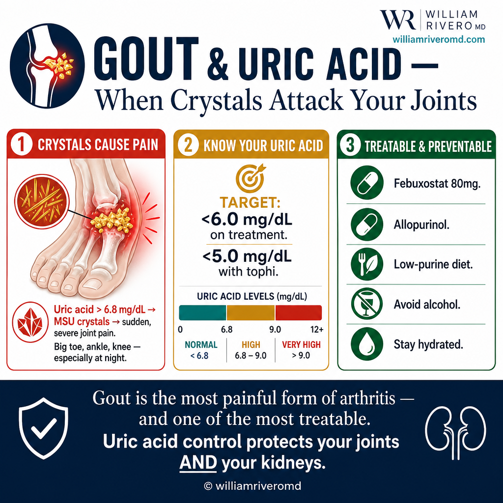
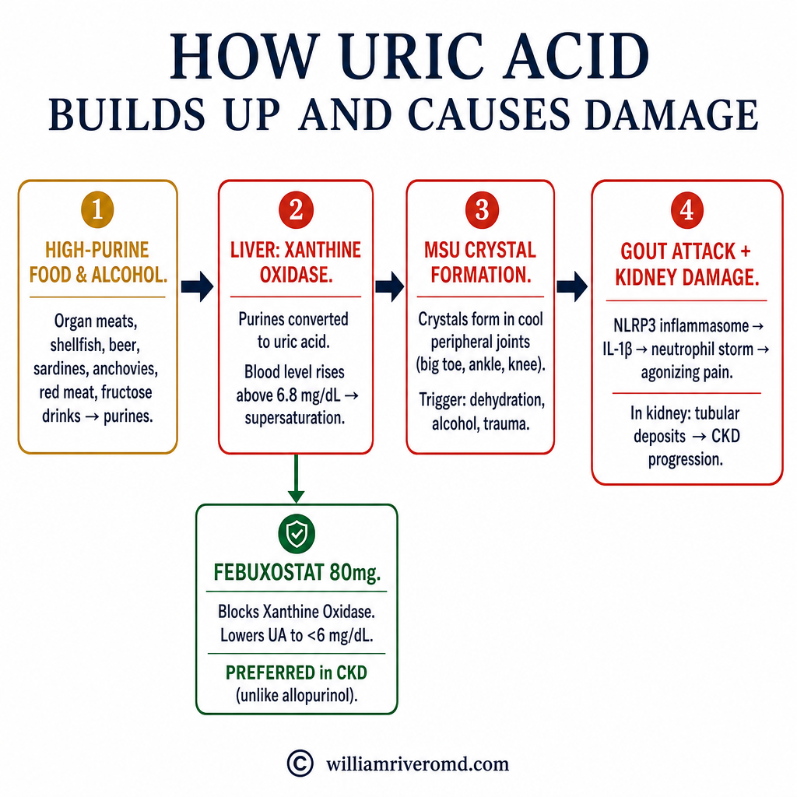
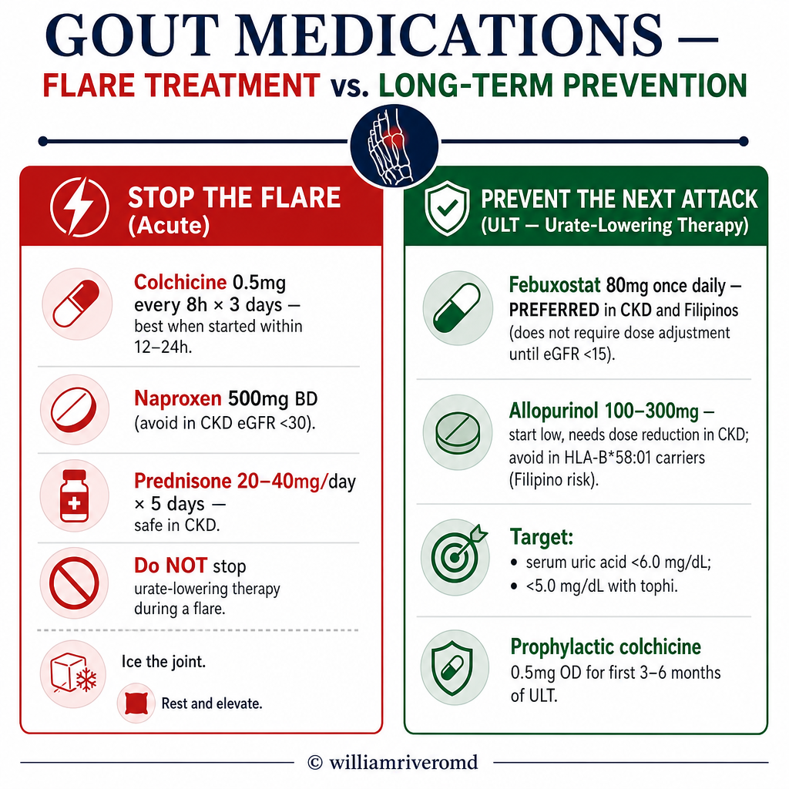

What is Gout?Ano ang Gout?Unsa ang Gout? Ano ing Gout?

Uric acid is not just a gout problem — elevated levels directly damage kidney tubules even without joint symptoms. Every CKD patient should have uric acid checked and kept below 6.0 mg/dL.Ang uric acid ay hindi lamang problema sa gout — ang mataas na antas ay direktang nakakasama sa mga kidney tubule kahit walang sintomas sa kasukasuan. Bawat pasyenteng may CKD ay dapat suriin ang uric acid at panatilihing wala sa 6.0 mg/dL.Ang uric acid dili lamang problema sa gout — ang taas nga antas direktang nakadaot sa mga kidney tubule bisan walay sintomas sa mga kasukasuan. Ang matag pasyente nga adunay CKD kinahanglan masusi ang uric acid ug mapadayon ubos sa 6.0 mg/dL. Ing uric acid ya ali lamang problema king gout — ing matas a antas ya direktang nakakasama king deng kidney tubule kahit alang sintomas king kasukasuan. Bawat pasyenteng atin CKD ya dapat suriin ing uric acid at panatilihing ala king 6.0 mg/dL.
Gout is caused by too much uric acid in the blood (hyperuricemia). When uric acid levels stay too high for too long, needle-shaped crystals form and deposit in joints, kidneys, and soft tissues — triggering sudden, intensely painful attacks and, over time, silent kidney damage.Ang gout ay dulot ng sobrang uric acid sa dugo (hyperuricemia). Kapag nanatiling mataas ang antas ng uric acid nang matagal, nagbubuo ang mga kristal na hugis karayom at nagdideposito sa mga kasukasuan, bato, at malambot na tisyu — na nagti-trigger ng biglaan, matinding masakit na pag-atake at, sa paglipas ng panahon, tahimik na pinsala sa bato.Ang gout hinungdan sa sobrang uric acid sa dugo (hyperuricemia). Sa higala nga nagpabilin nga taas ang antas sa uric acid og dugay, nagporma ang mga kristal nga hugis dagom ug nagdeposito sa mga kasukasuan, kidney, ug malambok nga tisyu — nagpahinabog kalit, hilabihan ka-sakit nga pag-atake ug, sa paglabay sa panahon, hilom nga kadaot sa kidney. Ing gout ya dulot ning sobrang uric acid king daya (hyperuricemia). Nung nanatiling matas ing antas ning uric acid nang matagal, nagbubuo ing deng kristal a hugis karayom at nagdideposito king deng kasukasuan, batu, at malambot a tisyu — a nagti-trigger ning biglaan, matinding masakit a pag-atake at, king paglipas ning panahon, tahimik a pinsala king batu.
Uric acid is the normal breakdown product of purines — compounds found naturally in the body and in many foods. The kidneys excrete most uric acid in urine. When production exceeds excretion — due to diet, genetics, or reduced kidney function — levels rise and crystals begin to form.Ang uric acid ay ang normal na produkto ng pagkasira ng mga purine — mga compound na natural na matatagpuan sa katawan at sa maraming pagkain. Ang mga bato ay nagtatanggal ng karamihan ng uric acid sa ihi. Kapag ang produksyon ay lumalagpas sa excrection — dahil sa diyeta, genetics, o nabawasang function ng bato — tumataas ang mga antas at nagsisimulang bumuo ang mga kristal.Ang uric acid mao ang normal nga produkto sa pagkaguba sa mga purine — mga compound nga natural nga makita sa lawas ug sa daghang pagkaon. Ang mga kidney nagtangtang sa kadaghanan sa uric acid sa ihi. Sa dihang ang produksyon molapas sa pagtangtang — tungod sa diyeta, genetics, o pagkunhod sa function sa kidney — motaas ang mga antas ug nagsugod ang pagporma sa mga kristal. Ing uric acid ya ing normal a produkto ning pagkasira ning deng purine — deng compound a natural a matatagpuan king bangkî at king dacal a pamangan. Ing deng batu ya nagtatanggal ning kadaklan ning uric acid king ihi. Nung ing produksyon ya lumalagpas king excrection — dahil king diyeta, genetics, o nabawasang function ning batu — tumataas ing deng antas at nagsisimulang bumuo ing deng kristal.
Who gets gout?Sino ang nagkakaroon ng gout?Kinsa ang nagkasakit sa gout? Sino ing nagkakaroon ning gout?
Gout is far more common in Filipino men — partly due to genetic variants affecting uric acid transporters (particularly ABCG2) that are more prevalent in Southeast Asian populations. High-purine diets (organ meats, seafood, red meat, beer) compound the risk significantly.Ang gout ay mas karaniwan sa mga lalaking Pilipino — bahagya dahil sa mga genetic variant na nakakaapekto sa mga uric acid transporter (lalo na ang ABCG2) na mas laganap sa mga populasyong Timog-Silangang Asyano. Ang mga high-purine diet (laman-loob, pagkaing-dagat, pulang karne, beer) ay lubhang nagdadagdag sa panganib.Ang gout mas kasagaran sa mga lalaking Pilipino — partly tungod sa mga genetic variant nga nakaapekto sa mga uric acid transporter (labi na ang ABCG2) nga mas kasagaran sa mga populasyon sa Timog-Silangang Asya. Ang mga high-purine diet (laman-loob, pagkaon sa dagat, pulang karne, beer) labihan nagdugang sa risgo. Ing gout ya mas karaniwan king deng lalaking Pilipino — bahagya dahil king deng genetic variant a nakakaapekto king deng uric acid transporter (lalo a ing ABCG2) a mas laganap king deng populasyong Timog-Silangang Asyano. Ing deng high-purine diet (laman-loob, pagkaing-dagat, pulang karne, beer) ya lubhang nagdadagdag king panganib.
The full gout spectrumAng buong espektrum ng goutAng tibuok espektrum sa gout Ing buong espektrum ning gout
Gout progresses from asymptomatic hyperuricemia → acute flares (sudden intense joint pain) → intercritical gout (pain-free between attacks) → chronic tophaceous gout (deposits in soft tissue) → gouty nephropathy (kidney damage from crystal deposits).Ang gout ay umuusad mula sa asymptomatic hyperuricemia → acute flares (biglaang matinding sakit sa kasukasuan) → intercritical gout (walang sakit sa pagitan ng mga pag-atake) → chronic tophaceous gout (mga deposito sa malambot na tisyu) → gouty nephropathy (pinsala sa bato mula sa mga deposito ng kristal).Ang gout nag-uswag gikan sa asymptomatic hyperuricemia → acute flares (kalit nga hilabihang sakit sa kasukasuan) → intercritical gout (walay sakit tali sa mga pag-atake) → chronic tophaceous gout (mga deposito sa malambok nga tisyu) → gouty nephropathy (kadaot sa kidney gikan sa mga deposito sa kristal). Ing gout ya umuusad mula king asymptomatic hyperuricemia → acute flares (biglaang matinding sakit king kasukasuan) → intercritical gout (alang sakit king pagitan ning deng pag-atake) → chronic tophaceous gout (deng deposito king malambot a tisyu) → gouty nephropathy (pinsala king batu mula king deng deposito ning kristal).
How Uric Acid Crystals Cause a Gout AttackPaano Nagdudulot ng Gout Attack ang mga Uric Acid CrystalUnsaon sa mga Uric Acid Crystal Pagpahinabo sa Gout Attack Paano Nagdudulot ning Gout Attack ing deng Uric Acid Crystal
![How Uric Acid Crystals Cause a Gout Attack — 4 steps: (1) uric acid accumulates above 6.8 mg/dL and MSU crystals form in cooler peripheral joints; (2) a trigger like dehydration, alcohol, trauma, or rapid uric acid change dislodges crystals into the joint fluid; (3) macrophages recognize crystals via the NLRP3 inflammasome and release IL-1β, triggering massive neutrophil influx that causes swelling, heat, redness, and pain within hours; (4) inflammation resolves over 7-14 days but crystals remain in the joint and each subsequent attack causes more damage](../images/gout-mechanism.webp)
A four-step diagram of how a gout attack happens — uric acid building up and forming crystals, a trigger dislodging them, the immune system reacting with sudden pain and swelling, and the inflammation settling while crystals stay behind in the joint.
How Gout Damages the KidneysPaano Nakakasama ang Gout sa mga BatoUnsaon sa Gout Pagdaot sa mga Kidney Paano Nakakasama ing Gout king deng Batu
![How Gout Damages the Kidneys — bidirectional kidney-gout relationship in 3 panels: (1) Urate nephropathy — MSU crystals deposit in renal tubules and interstitium causing chronic inflammation and fibrosis, a direct cause of CKD progression independent of BP and diabetes; (2) Uric acid kidney stones — supersaturated uric acid in acidic urine precipitates as stones, can obstruct urine flow and cause acute kidney injury; (3) CKD raises uric acid further — as kidney function declines, uric acid excretion decreases, creating a vicious cycle. Uric acid target in CKD patients is <6.0 mg/dL per KDIGO 2024; febuxostat 80 mg once daily is preferred over allopurinol in most Filipino CKD patients](../images/gout-kidney-damage.webp)
A diagram of the two-way link between gout and the kidneys — how uric acid crystals can scar kidney tissue and form stones, and how declining kidney function in turn pushes uric acid higher, creating a harmful cycle.
What to Eat — and What Triggers FlaresAno ang Dapat Kainin — at Ano ang Nagti-trigger ng mga FlareUnsa ang Dapat Kan-on — ug Unsa ang Nagatrigger sa mga Flare Ano ing Dapat Kainin — at Ano ing Nagti-trigger ning deng Flare
![What to Eat and What Triggers Flares — diet alone cannot normalize uric acid in established gout but significantly reduces flare frequency. Four food categories: (1) Always avoid (high flare risk) — organ meats including goto/dinuguan, beer and spirits especially dark beer and gin, sardines/anchovies/mackerel, softdrinks with high-fructose corn syrup, sugary fruit juices, bagoong and shrimp paste. (2) Safe to eat freely — eggs, low-fat dairy, most vegetables including camote/kangkong/pechay, white rice/bread/pasta/corn, coffee, 2-3 liters of water daily, cherries. (3) Moderate (limit portions) — red meat max 1 serving/day, shellfish once or twice weekly, bangus and tilapia moderate portions, tofu and legumes, wine. (4) Protective foods — low-fat milk and yogurt, vitamin C-rich foods like calamansi/guava/papaya, ampalaya, adequate hydration, alkaline foods. In Filipino patients the biggest dietary drivers are organ meats, shellfish, beer, and softdrinks with fructose](../images/gout-diet.webp)
A food guide for gout sorting common Filipino foods into what to avoid, what is safe to eat freely, what to limit, and what may help — highlighting organ meats, shellfish, beer, and sugary drinks as the main flare triggers.
Purine content of common Filipino foodsNilalaman ng purine ng mga karaniwang pagkaing FilipinoSulod sa purine sa mga kasagarang pagkaon nga Filipino Nilalaman ning purine ning deng karaniwang pagkaing Filipino
Use this table to compare actual purine content (in milligrams per typical Filipino serving). Purines in food are converted to uric acid by the liver. Daily target for patients with gout or hyperuricemia: <400 mg purines/day; for severe or tophaceous gout, <200 mg/day. The risk labels below help you build a realistic plate. Numbers are averages from FNRI-Philippines, USDA, and rheumatology food databases.Gamitin ang talahanayang ito upang ihambing ang aktwal na nilalaman ng purine (sa milligrams bawat tipikal na Filipino serving). Ang mga purine sa pagkain ay kino-convert ng atay sa uric acid. Araw-araw na target para sa mga pasyenteng may gout o hyperuricemia: <400 mg purines/araw; para sa malubha o tophaceous gout, <200 mg/araw. Ang mga label ng panganib sa ibaba ay tumutulong sa inyo na bumuo ng makatotohanang plato. Ang mga numero ay mga average mula sa FNRI-Philippines, USDA, at mga rheumatology food database.Gamiton kining talahanayan aron ikomparar ang aktwal nga sulod sa purine (sa milligrams matag tipikal nga Filipino serving). Ang mga purine sa pagkaon gi-convert sa atay ngadto sa uric acid. Adlaw-adlaw nga target alang sa mga pasyente nga adunay gout o hyperuricemia: <400 mg purines/adlaw; alang sa grabe o tophaceous gout, <200 mg/adlaw. Ang mga label sa risgo sa ubos motabang kaninyo sa pagtukod og makatinuod nga plato. Ang mga numero average gikan sa FNRI-Philippines, USDA, ug mga rheumatology food database. Gamitin ing talahanayang ini upang ihambing ing aktwal a nilalaman ning purine (king milligrams bawat tipikal a Filipino serving). Ing deng purine king pamangan ya kino-convert ning atay king uric acid. Aldo-aldo a target para king deng pasyenteng atin gout o hyperuricemia: <400 mg purines/aldo; para king malubha o tophaceous gout, <200 mg/aldo. Ing deng label ning panganib king ibaba ya tumutulong king inyo a bumuo ning makatotohanang plato. Ing deng numero ya deng average mula king FNRI-Philippines, USDA, at deng rheumatology food database.
Organ meats (laman-loob) and innards — biggest single riskMga laman-loob — pinakamataas na panganibMga laman-loob — labing dako nga risgo Deng laman-loob — pinakamatas a panganib
| Food | Serving | Purines | Risk |
|---|---|---|---|
| Atay ng baka (beef liver) | 100 g | ~550 mg | EXTREME — avoid |
| Atay ng manok (chicken liver) | 100 g | ~470 mg | EXTREME — avoid |
| Bato ng baka (beef kidney) | 100 g | ~510 mg | EXTREME — avoid |
| Utak (brain) | 100 g | ~360 mg | EXTREME — avoid |
| Goto / tripe (callos) | 100 g | ~470 mg | EXTREME — avoid |
| Dinuguan (pork blood stew) | 1 cup | ~480 mg | EXTREME — avoid |
| Sweetbreads (thymus, pancreas) | 100 g | ~825 mg | EXTREME — avoid |
| Kasim/balun-balunan (gizzard) | 100 g | ~280 mg | VERY HIGH |
| Isaw / chicken intestines (street food) | 2 sticks | ~250 mg | VERY HIGH |
Seafood — small fish and shellfish are the worstPagkaing-dagat — ang maliliit na isda at shellfish ang pinakamasamaPagkaon sa dagat — ang gagmay nga isda ug shellfish ang pinaka-daotan Pagkaing-dagat — ing maliliit a isda at shellfish ing pinakamasama
| Food | Serving | Purines | Risk |
|---|---|---|---|
| Dilis / dried anchovies | 30 g | ~340 mg | EXTREME |
| Tuyo (dried fish, with bones) | 30 g | ~290 mg | EXTREME |
| Sardinas (canned, with bones) | 1/2 can (100 g) | ~480 mg | EXTREME |
| Bagoong alamang / isda | 1 tbsp | ~250 mg | EXTREME (hidden — see below) |
| Tahong / talaba (mussels, oysters) | 100 g | ~290 mg | VERY HIGH |
| Hipon / sugpo (shrimp, prawns) | 100 g | ~265 mg | VERY HIGH |
| Pusit (squid) | 100 g | ~190 mg | HIGH |
| Alimasag / alimango (crab) | 100 g | ~150 mg | HIGH |
| Tuna (fresh, grilled) | 100 g | ~290 mg | VERY HIGH |
| Galunggong (mackerel scad) | 100 g | ~250 mg | VERY HIGH |
| Bangus (milkfish, fresh, grilled) | 100 g | ~165 mg | HIGH (limit to ½ portion) |
| Tilapia (grilled) | 100 g | ~120 mg | MODERATE |
| Cream dory / pangasius | 100 g | ~95 mg | MODERATE |
Meat, poultry, processedKarne, manok, at mga processed na pagkainKarne, manok, ug mga processed nga pagkaon Karne, manok, at deng processed a pamangan
| Food | Serving | Purines | Risk |
|---|---|---|---|
| Lechon kawali / liempo (pork belly) | 100 g | ~145 mg | HIGH |
| Beef brisket / tapa | 100 g | ~135 mg | HIGH |
| Adobong manok (chicken adobo) | 100 g | ~140 mg | HIGH |
| Tocino, longganisa, hotdog | 100 g | ~110 mg + nitrates | HIGH (processed) |
| Spam, corned beef | 100 g | ~110 mg | HIGH (processed) |
| Chicken breast, boiled (no skin) | 100 g | ~135 mg | MODERATE (1 serving/day OK) |
| Egg (whole) | 1 large | ~5 mg | SAFE |
| Tokwa (tofu) | 100 g | ~70 mg | SAFE |
Vegetables, beans, grainsMga gulay, beans, at butilMga utanon, beans, ug butil Deng gulay, beans, at butil
| Food | Serving | Purines | Risk |
|---|---|---|---|
| Munggo (mung beans), cooked | 1 cup | ~135 mg | MODERATE (plant — flare risk lower) |
| Garbanzos / lentils | 1/2 cup cooked | ~85 mg | MODERATE |
| Asparagus, kalabasa, kabute | 1 cup cooked | ~75 mg | SAFE (plant purines do not raise flare risk) |
| Spinach (alugbati), malunggay | 1 cup cooked | ~60 mg | SAFE |
| White rice (kanin) | 1 cup cooked | ~10 mg | SAFE |
| Pandesal, white bread, pasta | 2 pieces / 1 cup | ~10–15 mg | SAFE |
| Most fruits (apple, pear, papaya) | 1 serving | <10 mg | SAFE (avoid sweetened) |
| Cherries (fresh or unsweetened) | 10–12 pieces | ~5 mg | PROTECTIVE — lowers flare risk |
Drinks — alcohol and fructose drive flares hardestMga inumin — ang alkohol at fructose ang pinaka-nagti-trigger ng mga flareMga ilimnon — ang alkohol ug fructose ang labing nagatrigger sa mga flare Deng inumin — ing alkohol at fructose ing pinaka-nagti-trigger ning deng flare
| Food | Serving | Effect | Risk |
|---|---|---|---|
| Beer (any) — guanosine + ethanol | 1 bottle (330 mL) | Doubles flare risk | EXTREME — avoid |
| Gin, lambanog, brandy, whiskey | 1 shot (45 mL) | Reduces uric-acid excretion | EXTREME — avoid |
| Coke / Pepsi / dark colas (HFCS) | 1 can (330 mL) | HFCS → fructose → urate | VERY HIGH — avoid |
| Sweetened milk-tea, frappuccino | 1 large (500 mL) | Same fructose mechanism | HIGH |
| Sweetened "fruit juice" (Tang, Zest-O) | 1 glass | Concentrated fructose | HIGH |
| Wine (red or white, in moderation) | 1 small glass | Smaller flare risk than beer/spirits | MODERATE — limit |
| Brewed coffee (caffeinated) | 1–3 cups | Lowers uric acid long-term | PROTECTIVE |
| Plain water | 2.5–3 L/day | Improves urate excretion | PROTECTIVE |
| Low-fat milk, plain yogurt | 1 cup / 1 serving | Lowers uric acid (orotic acid) | PROTECTIVE |
Why a "vegetable purine" is safer than a "meat purine"Bakit ang "purine ng gulay" ay mas ligtas kaysa sa "purine ng karne"Ngano nga ang "purine sa utanon" mas luwas kaysa sa "purine sa karne" Bakit ing "purine ning gulay" ya mas ligtas kaysa king "purine ning karne"
Despite their measurable purine content, plant-based purines (asparagus, mushrooms, beans, spinach) do NOT raise gout flare risk in modern cohort studies. Animal-derived purines do — especially from organ meats, small fish, and shellfish. So you do not need to avoid munggo, kalabasa, or alugbati. Avoid the dilis, sardines, atay, and dinuguan first.Sa kabila ng kanilang nasusukat na nilalaman ng purine, ang mga plant-based purines (asparagus, kabute, beans, spinach) ay HINDI nagpapataas ng panganib ng gout flare sa mga modernong cohort study. Ang mga purine mula sa hayop ay nagpapataas — lalo na mula sa laman-loob, maliliit na isda, at shellfish. Kaya hindi ninyo kailangang iwasan ang munggo, kalabasa, o alugbati. Iwasan muna ang dilis, sardinas, atay, at dinuguan.Bisan pa sa ilang masukod nga sulod sa purine, ang mga plant-based purines (asparagus, kabute, beans, spinach) DILI nagpataas sa risgo sa gout flare sa mga modernong cohort study. Ang mga purine gikan sa hayop nagpataas — labi na gikan sa laman-loob, gagmay nga isda, ug shellfish. Busa dili ninyo kinahanglan iwasan ang munggo, kalabasa, o alugbati. Iwasan una ang dilis, sardinas, atay, ug dinuguan. King kabila ning kanilang nasusukat a nilalaman ning purine, ing deng plant-based purines (asparagus, kabute, beans, spinach) ya HINDI nagpapataas ning panganib ning gout flare king deng modernong cohort study. Ing deng purine mula king hayop ya nagpapataas — lalo a mula king laman-loob, maliliit a isda, at shellfish. Kaya ali ninyo kailangang iwasan ing munggo, kalabasa, o alugbati. Iwasan muna ing dilis, sardinas, atay, at dinuguan.
Medications for Gout — Flare Treatment vs. PreventionMga Gamot para sa Gout — Paggamot ng Flare vs. Pag-iwasMga Medisina alang sa Gout — Pagtambal sa Flare vs. Pagpugong Deng Gamut para king Gout — Paggamut ning Flare vs. Pag-iwas

There are two entirely separate goals in gout management: treating an acute flare and preventing future flares by lowering uric acid long-term. Confusing these two leads to undertreated disease.Mayroong dalawang ganap na magkahiwalay na layunin sa pamamahala ng gout: paggamot ng acute flare at pag-iwas sa mga susunod na flare sa pamamagitan ng pagpapababa ng uric acid sa matagal na panahon. Ang pagkalito sa dalawa ay nagdudulot ng hindi sapat na paggamot ng sakit.Adunay duha ka hingpit nga magbulag nga katuyoan sa pagdumala sa gout: pagtambal sa acute flare ug pagpugong sa mga umaabot nga flare pinaagi sa pagpakunhod sa uric acid sa dugay nga panahon. Ang pagkalibog niining duha nagdala sa dili igo nga pagtambal sa sakit. Mayroong dalawang ganap a magkahiwalay a layunin king pamamahala ning gout: paggamut ning acute flare at pag-iwas king deng susunod a flare king pamamagitan ning pagpapababa ning uric acid king matagal a panahon. Ing pagkalito king dalawa ya nagdudulot ning ali sapat a paggamut ning sakit.
| MedicationGamotMedisina Gamut | PurposeLayuninKatuyoan Layunin | How it worksPaano gumaganaUnsaon kini pagtrabaho Paano gumagana | Key notesMahahalagang talaHinungdanong mga tala Mahahalagang tala |
|---|---|---|---|
| Febuxostat 80 mg (Feburic, Uricfree) | Long-term UA loweringPangmatagalang pagpapababa ng UAPangtagay nga pagpakunhod sa UA Pangmatagalang pagpapababa ning UA | Xanthine oxidase inhibitor — blocks final step of uric acid synthesisXanthine oxidase inhibitor — hinaharangan ang huling hakbang ng synthesis ng uric acidXanthine oxidase inhibitor — gibabagan ang katapusang lakang sa synthesis sa uric acid Xanthine oxidase inhibitor — hinaharangan ing huling hakbang ning synthesis ning uric acid | Preferred in CKD. Does not require dose reduction until eGFR <15. Take daily, not just during flares.Mas gugustuhin sa CKD. Hindi nangangailangan ng dose reduction hanggang eGFR <15. Inumin araw-araw, hindi lamang sa panahon ng mga flare.Mas gusto sa CKD. Dili nagkinahanglan og dose reduction hangtod eGFR <15. Inumon adlaw-adlaw, dili lamang sa panahon sa mga flare. Mas gugustuhin king CKD. Ali nangangailangan ning dose reduction anggang eGFR <15. Inumin aldo-aldo, ali lamang king panahon ning deng flare. |
| Allopurinol 100–300 mg | Long-term UA loweringPangmatagalang pagpapababa ng UAPangtagay nga pagpakunhod sa UA Pangmatagalang pagpapababa ning UA | Xanthine oxidase inhibitor — older agent, well-establishedXanthine oxidase inhibitor — mas lumang ahente, well-establishedXanthine oxidase inhibitor — mas daan nga ahente, well-established Xanthine oxidase inhibitor — mas lumang ahente, well-established | Must be dose-reduced in CKD (risk of severe cutaneous reaction). Start low (50–100 mg), titrate slowly. Check HLA-B*5801 in Filipino patients before starting.Dapat bawasan ang dosis sa CKD (panganib ng matinding cutaneous reaction). Magsimula sa mababa (50–100 mg), dahan-dahang i-titrate. Suriin ang HLA-B*5801 sa mga Pilipinong pasyente bago simulan.Kinahanglan i-dose-reduce sa CKD (risgo sa grabe nga cutaneous reaction). Magsugod sa ubos (50–100 mg), hinay-hinay i-titrate. Susiha ang HLA-B*5801 sa mga Pilipinong pasyente sa wala pa magsugod. Dapat bawasan ing dosis king CKD (panganib ning matinding cutaneous reaction). Magsimula king mababa (50–100 mg), dahan-dahang i-titrate. Suriin ing HLA-B*5801 king deng Pilipinong pasyente bago simulan. |
| Colchicine 0.5–0.6 mg | Flare treatment + prophylaxisPaggamot ng flare + prophylaxisPagtambal sa flare + prophylaxis Paggamut ning flare + prophylaxis | Disrupts neutrophil migration and NLRP3 inflammasome activationGinagambala ang neutrophil migration at NLRP3 inflammasome activationNagaguba sa neutrophil migration ug NLRP3 inflammasome activation Ginagambala ing neutrophil migration at NLRP3 inflammasome activation | Most effective within 12–24 hours of flare onset. Use with caution in CKD — reduce dose. Do NOT use with clarithromycin or cyclosporine.Pinaka-epektibo sa loob ng 12–24 oras mula sa simula ng flare. Gamitin nang may pag-iingat sa CKD — bawasan ang dosis. HUWAG gamitin kasabay ng clarithromycin o cyclosporine.Pinaka-epektibo sulod sa 12–24 ka oras gikan sa pagsugod sa flare. Gamiton nga may pag-amping sa CKD — pakunhora ang dosis. DILI gamiton uban sa clarithromycin o cyclosporine. Pinaka-epektibo king loob ning 12–24 oras mula king simula ning flare. Gamitin nang atin pag-iingat king CKD — bawasan ing dosis. HUWAG gamitin kasabay ning clarithromycin o cyclosporine. |
| Naproxen / Indomethacin | Acute flare treatmentPaggamot ng acute flarePagtambal sa acute flare Paggamut ning acute flare | NSAID — reduces joint inflammation rapidlyNSAID — mabilis na nagpapababa ng pamamaga ng kasukasuanNSAID — dali nga nagpakunhod sa implamason sa kasukasuan NSAID — mabilis a nagpapababa ning pamamaga ning kasukasuan | Avoid in CKD, heart failure, or peptic ulcer disease. Use only if kidney function is preserved.Iwasan sa CKD, heart failure, o peptic ulcer disease. Gamitin lamang kung napanatili ang function ng bato.Iwasan sa CKD, heart failure, o peptic ulcer disease. Gamiton lamang kon napreserbar ang function sa kidney. Iwasan king CKD, heart failure, o peptic ulcer disease. Gamitin lamang nung napanatili ing function ning batu. |
| Prednisone / Methylprednisolone | Acute flare treatmentPaggamot ng acute flarePagtambal sa acute flare Paggamut ning acute flare | Systemic corticosteroid — suppresses inflammatory cascadeSystemic corticosteroid — pinipigilan ang inflammatory cascadeSystemic corticosteroid — nagpugong sa inflammatory cascade Systemic corticosteroid — pinipigilan ing inflammatory cascade | Preferred when NSAIDs are contraindicated (CKD, elderly). Short course only (5–7 days). Monitor blood sugar in diabetic patients.Mas ginugusto kapag kontraindikado ang mga NSAID (CKD, matatanda). Maikling kurso lamang (5–7 araw). Subaybayan ang asukal sa dugo sa mga pasyenteng may diabetes.Mas gusto kon kontraindikado ang mga NSAID (CKD, maguulod). Mubo nga kurso lamang (5–7 ka adlaw). Bantayan ang asukal sa dugo sa mga pasyente nga adunay diabetes. Mas ginugusto nung kontraindikado ing deng NSAID (CKD, matatanda). Maikling kurso lamang (5–7 aldo). Subaybayan ing asukal king daya king deng pasyenteng atin diabetes. |
Do NOT start febuxostat or allopurinol during an active flareHUWAG simulan ang febuxostat o allopurinol sa panahon ng aktibong flareDILI magsugod sa febuxostat o allopurinol sa panahon sa aktibong flare HUWAG simulan ing febuxostat o allopurinol king panahon ning aktibong flare
Starting urate-lowering therapy during an acute attack can prolong or worsen the flare by mobilizing crystals. Wait until the flare has completely resolved — at least 2–4 weeks — before initiating or adjusting urate-lowering therapy. Use colchicine or steroids to control the current flare first.Ang pagsisimula ng urate-lowering therapy sa panahon ng acute attack ay maaaring magpahaba o magpalala ng flare sa pamamagitan ng paggalaw ng mga kristal. Hintayin hanggang ganap na mawala ang flare — hindi bababa sa 2–4 na linggo — bago simulan o i-adjust ang urate-lowering therapy. Gamitin muna ang colchicine o steroids upang kontrolin ang kasalukuyang flare.Ang pagsugod sa urate-lowering therapy sa panahon sa acute attack mahimong magpahaba o magpasamot sa flare pinaagi sa pagpaagaw sa mga kristal. Hulata hangtod hingpit nga mawala ang flare — labing menos 2–4 ka semana — sa wala pa magsugod o mag-adjust sa urate-lowering therapy. Gamiton una ang colchicine o steroids aron kontrolon ang kasamtangang flare. Ing pagsisimula ning urate-lowering therapy king panahon ning acute attack ya maaaring magpahaba o magpalala ning flare king pamamagitan ning paggalaw ning deng kristal. Hintayin anggang ganap a mawala ing flare — ali bababa king 2–4 a lutu — bago simulan o i-adjust ing urate-lowering therapy. Gamitin muna ing colchicine o steroids upang kontrolin ing kasalukuyang flare.
Prophylactic colchicine when starting ULTProphylactic colchicine kapag nagsisimula ng ULTProphylactic colchicine sa dihang nagsugod sa ULT Prophylactic colchicine nung nagsisimula ning ULT
When you first start febuxostat or allopurinol, falling uric acid levels can paradoxically trigger a flare as crystals mobilize. Your doctor will typically prescribe low-dose colchicine (0.5 mg daily) for the first 3–6 months of urate-lowering therapy to prevent this.Kapag una kayong nagsimula ng febuxostat o allopurinol, ang pagbaba ng antas ng uric acid ay maaaring paradoxically mag-trigger ng flare habang gumagalaw ang mga kristal. Ang inyong doktor ay karaniwang magre-reseta ng mababang dosis ng colchicine (0.5 mg araw-araw) para sa unang 3–6 buwan ng urate-lowering therapy upang maiwasan ito.Sa dihang una kamo nagsugod sa febuxostat o allopurinol, ang pagkunhod sa antas sa uric acid mahimong paradoxically magtrigger sa usa ka flare samtang nagagalaw ang mga kristal. Ang inyong doktor kasagarang magreseta og ubos nga dosis sa colchicine (0.5 mg matag adlaw) alang sa unang 3–6 ka bulan sa urate-lowering therapy aron mapugngan kini. Nung una kayung nagsimula ning febuxostat o allopurinol, ing pagbaba ning antas ning uric acid ya maaaring paradoxically mag-trigger ning flare habang gumagalaw ing deng kristal. Ing inyu doktor ya karaniwang magre-reseta ning mababang dosis ning colchicine (0.5 mg aldo-aldo) para king unang 3–6 bulan ning urate-lowering therapy upang maiwasan ini.
What to Do During a Gout AttackAno ang Dapat Gawin sa Panahon ng Gout AttackUnsa ang Buhaton sa Panahon sa Gout Attack Ano ing Dapat Gawin king Panahon ning Gout Attack
![What to Do During a Gout Attack — 4-step acute flare management: (1) Act within 12-24 hours for best results — anti-inflammatory medications work best when started early; if your doctor has given you a rescue medication (colchicine or prednisone) take it at the first sign of a flare. (2) Rest and elevate the affected joint — even light pressure like a bedsheet can be excruciating; apply ice wrapped in a towel for 20-30 minutes several times a day. (3) Drink large amounts of water — aim for 3 liters during the flare to promote uric acid excretion; avoid alcohol and sugary drinks completely. (4) Continue your urate-lowering medication — if you are already on febuxostat or allopurinol, do NOT stop it during a flare; stopping and restarting causes uric acid fluctuations that prolong or trigger additional attacks](../images/gout-acute-flare.webp)
A four-step guide to handling a gout attack — acting early with anti-inflammatory medicine, resting and icing the joint, drinking plenty of water, and continuing your uric-acid-lowering medicine rather than stopping it.
Uric Acid Calculator — Target Checker, FEUA & ULT Dose GuideCalculator ng Uric Acid — Target Checker, FEUA at ULT Dose GuideCalculator sa Uric Acid — Target Checker, FEUA ug ULT Dose Guide Calculator ning Uric Acid — Target Checker, FEUA at ULT Dose Guide
Enter your uric acid results and kidney function to check whether you have met your urate target, calculate your fractional excretion of uric acid (which determines the cause of hyperuricemia), and see your febuxostat/allopurinol dose guidance by eGFR.Ilagay ang inyong mga resulta ng uric acid at function ng bato upang suriin kung natugunan na ninyo ang inyong urate target, kalkulahin ang inyong fractional excretion ng uric acid (na nagtatakda ng sanhi ng hyperuricemia), at makita ang inyong gabay sa dosis ng febuxostat/allopurinol ayon sa eGFR.Isulod ang inyong mga resulta sa uric acid ug function sa kidney aron susihon kon naabtan na ninyo ang inyong urate target, kalkulahon ang inyong fractional excretion sa uric acid (nga nagtino sa hinungdan sa hyperuricemia), ug makita ang inyong giya sa dosis sa febuxostat/allopurinol base sa eGFR. Ilagay ing inyu deng resulta ning uric acid at function ning batu upang suriin nung natugunan a ninyo ing inyu urate target, kalkulahin ing inyu fractional excretion ning uric acid (a nagtatakda ning sanhi ning hyperuricemia), at makita ing inyu gabay king dosis ning febuxostat/allopurinol ayon king eGFR.
⚕ FEUA = (Urine UA × Serum Cr) ÷ (Serum UA × Urine Cr) × 100. FEUA <5.5% = under-excretor (most common in CKD); FEUA >10% = over-producer. ULT preference per Dr. Rivero practice protocol: febuxostat 40–80mg OD preferred over allopurinol in CKD (no dose adjustment needed for eGFR >30). Losartan is the only ARB with clinically meaningful uricosuric effect (Nishida 2014). This tool is educational — ULT initiation and flare management require physician supervision.
Frequently Asked QuestionsMga Madalas ItanongMga Kasagarang Gipangutana Deng Madalas Itanong
My uric acid is high but I have no symptoms — do I need medication?Mataas ang aking uric acid ngunit wala akong sintomas — kailangan ko ba ng gamot?Taas ang akong uric acid apan walay sintomas ako — kinahanglan ba ako og medisina? Matas ing aking uric acid ngarud ala akong sintomas — kailangan ko ba ning gamut?
Asymptomatic hyperuricemia (high uric acid, no gout attacks or kidney stones) is common. Current guidelines generally recommend medication when uric acid is persistently above 9–10 mg/dL, or when there is evidence of kidney damage, kidney stones, or cardiovascular disease. Below this threshold, lifestyle modification and monitoring are the first approach. Ask your doctor about your individual risk.Ang asymptomatic hyperuricemia (mataas na uric acid, walang gout attacks o kidney stones) ay karaniwan. Ang mga kasalukuyang alituntunin ay karaniwang nagrerekomenda ng gamot kapag ang uric acid ay patuloy na nasa itaas ng 9–10 mg/dL, o kapag may katibayan ng pinsala sa bato, kidney stones, o cardiovascular disease. Sa ibaba ng threshold na ito, ang pagbabago ng pamumuhay at pagsubaybay ang unang diskarte. Tanungin ang inyong doktor tungkol sa inyong indibidwal na panganib.Ang asymptomatic hyperuricemia (taas nga uric acid, walay gout attacks o kidney stones) kasagaran. Ang mga kasamtangang guidelines kasagarang nagrekomenda sa medisina kon ang uric acid padayon nga labaw sa 9–10 mg/dL, o kon adunay ebidensya sa kadaot sa kidney, kidney stones, o cardiovascular disease. Ubos niining threshold, ang pagbag-o sa pamumuhay ug pagbantay ang unang diskarte. Pangutan-a ang inyong doktor bahin sa inyong indibidwal nga risgo. Ing asymptomatic hyperuricemia (matas a uric acid, alang gout attacks o kidney stones) ya karaniwan. Ing deng kasalukuyang alituntunin ya karaniwang nagrerekomenda ning gamut nung ing uric acid ya patuloy a nasa itaas ning 9–10 mg/dL, o nung atin katibayan ning pinsala king batu, kidney stones, o cardiovascular disease. King ibaba ning threshold a ini, ing pagbabago ning pamumuhay at pagsubaybay ing unang diskarte. Tanungin ing inyu doktor tungkol king inyu indibidwal a panganib.
Can I stop febuxostat once my uric acid is normal?Maaari ko bang itigil ang febuxostat kapag normal na ang aking uric acid?Mahimo ba akong mohunong sa febuxostat sa higala nga normal na ang akong uric acid? Maaari ko bang itigil ing febuxostat nung normal a ing aking uric acid?
No. Uric acid normalizes because you are taking the medication. Stopping it causes levels to rise again within weeks, and deposits that were slowly dissolving will re-accumulate. Most patients with recurrent gout require long-term — often lifelong — urate-lowering therapy.Hindi. Nino-normalize ang uric acid dahil iniinom ninyo ang gamot. Ang paghinto nito ay nagdudulot ng pagbabalik ng mga antas sa loob ng ilang linggo, at ang mga deposito na dahan-dahang natutunaw ay muling mag-iipon. Karamihan sa mga pasyenteng may paulit-ulit na gout ay nangangailangan ng pangmatagalang — kadalasang panghabambuhay — urate-lowering therapy.Dili. Ang uric acid nag-normalize tungod kay giinom ninyo ang medisina. Ang pagundang niini nagpahinabog pagbalik sa mga antas sulod sa pipila ka semana, ug ang mga deposito nga hinay-hinay nga natunaw mopuli pag-usab. Kadaghanan sa mga pasyente nga adunay paulit-ulit nga gout nagkinahanglan og pangtagay — sagad pangkinabuhi — urate-lowering therapy. Ali. Nino-normalize ing uric acid dahil iniinom ninyo ing gamut. Ing paghinto nini ya nagdudulot ning pagbabalik ning deng antas king loob ning ilang lutu, at ing deng deposito a dahan-dahang natutunaw ya muling mag-iipon. Kadaklan king deng pasyenteng atin paulit-ulit a gout ya nangangailangan ning pangmatagalang — kadalasang panghabambuhay — urate-lowering therapy.
Is gout hereditary?Minana ba ang gout?Namamana ba ang gout? Minana ba ing gout?
Yes — strongly so. Multiple genetic variants affecting kidney uric acid transporters (SLC2A9, ABCG2, SLC22A12) have been identified, and these variants are particularly prevalent in Filipino and other Southeast Asian populations. If your parents or siblings have gout, your risk is significantly elevated regardless of diet.Oo — at lubos na. Maraming genetic variant na nakakaapekto sa mga kidney uric acid transporter (SLC2A9, ABCG2, SLC22A12) ang natukoy, at ang mga variant na ito ay partikular na laganap sa mga Pilipino at iba pang populasyong Timog-Silangang Asyano. Kung ang inyong mga magulang o kapatid ay may gout, ang inyong panganib ay makabuluhang mas mataas anuman ang diyeta.Oo — ug kusganon gayod. Daghang genetic variant nga nakaapekto sa mga kidney uric acid transporter (SLC2A9, ABCG2, SLC22A12) ang natukod, ug kining mga variant labi na kasagaran sa mga Pilipino ug uban pang populasyon sa Timog-Silangang Asya. Kon ang inyong mga ginikanan o igsuon adunay gout, ang inyong risgo makabuluhang mas taas bisan unsa ang diyeta. Oo — at lubos a. Dacal a genetic variant a nakakaapekto king deng kidney uric acid transporter (SLC2A9, ABCG2, SLC22A12) ing natukoy, at ing deng variant a ini ya partikular a laganap king deng Pilipino at iba pang populasyong Timog-Silangang Asyano. Nung ing inyu deng magulang o kapatid ya atin gout, ing inyu panganib ya makabuluhang mas matas anuman ing diyeta.
Does losartan help with uric acid?Nakatutulong ba ang losartan sa uric acid?Makatabang ba ang losartan sa uric acid? Nakatutulong ba ing losartan king uric acid?
Yes — losartan (among ARBs) has a mild uricosuric effect, lowering serum uric acid by approximately 0.5–1.0 mg/dL. For hypertensive patients who also have gout or hyperuricemia, losartan is the preferred ARB. Note that telmisartan and other ARBs do not share this property.Oo — ang losartan (kabilang sa mga ARB) ay may banayad na uricosuric effect, nagpapababa ng serum uric acid ng humigit-kumulang 0.5–1.0 mg/dL. Para sa mga pasyenteng may hypertension na mayroon din gout o hyperuricemia, ang losartan ang mas gugustuhing ARB. Tandaan na ang telmisartan at iba pang ARB ay hindi nagtataglay ng katangiang ito.Oo — ang losartan (kabilang sa mga ARB) adunay banayad nga uricosuric effect, nagpakunhod sa serum uric acid og mga 0.5–1.0 mg/dL. Alang sa mga pasyente nga adunay hypertension nga adunay usab gout o hyperuricemia, ang losartan ang mas gusto nga ARB. Hinumdumi nga ang telmisartan ug uban pang ARB wala nagpakig-ambit niining kabtangan. Oo — ing losartan (kabilang king deng ARB) ya atin banayad a uricosuric effect, nagpapababa ning serum uric acid ning humigit-kumulang 0.5–1.0 mg/dL. Para king deng pasyenteng atin hypertension a mayroon din gout o hyperuricemia, ing losartan ing mas gugustuhing ARB. Tandaan a ing telmisartan at iba pang ARB ya ali nagtataglay ning katangiang ini.
Download the Gout & Uric Acid Food GuideI-download ang Gabay sa Pagkain para sa Gout at Uric AcidI-download ang Giya sa Pagkaon para sa Gout ug Uric AcidI-download ang Gabay sa Pagkain para sa Gout at Uric Acid
A printable 6-page Filipino patient handout covering purine heat maps, UA targets by CKD stage, medication reference, hidden UA triggers, and the 4-step flare protocol.Isang 6-pahinang handout para sa pasyente na sumasaklaw sa mga purine heat map, target ng UA ayon sa yugto ng CKD, sanggunian sa gamot, mga nakatagong trigger ng UA, at ang 4-hakbang na flare protocol.Usa ka 6-pahina nga handout alang sa pasyente nga nagtabon sa mga purine heat map, target sa UA sumala sa yugto sa CKD, reperensya sa tambal, mga nakatago nga trigger sa UA, ug ang 4-lakang nga flare protocol.Isang 6-pahinang handout para sa pasyente na sumasaklaw sa mga purine heat map, target ng UA ayon sa yugto ng CKD, sanggunian sa gamot, mga nakatagong trigger ng UA, at ang 4-hakbang na flare protocol.
Download PDF — Gout & Uric Acid Food GuideI-download ang PDF — Gabay sa Pagkain para sa Gout at Uric AcidI-download ang PDF — Giya sa Pagkaon para sa Gout ug Uric AcidI-download ang PDF — Gabay sa Pagkain para sa Gout at Uric Acid